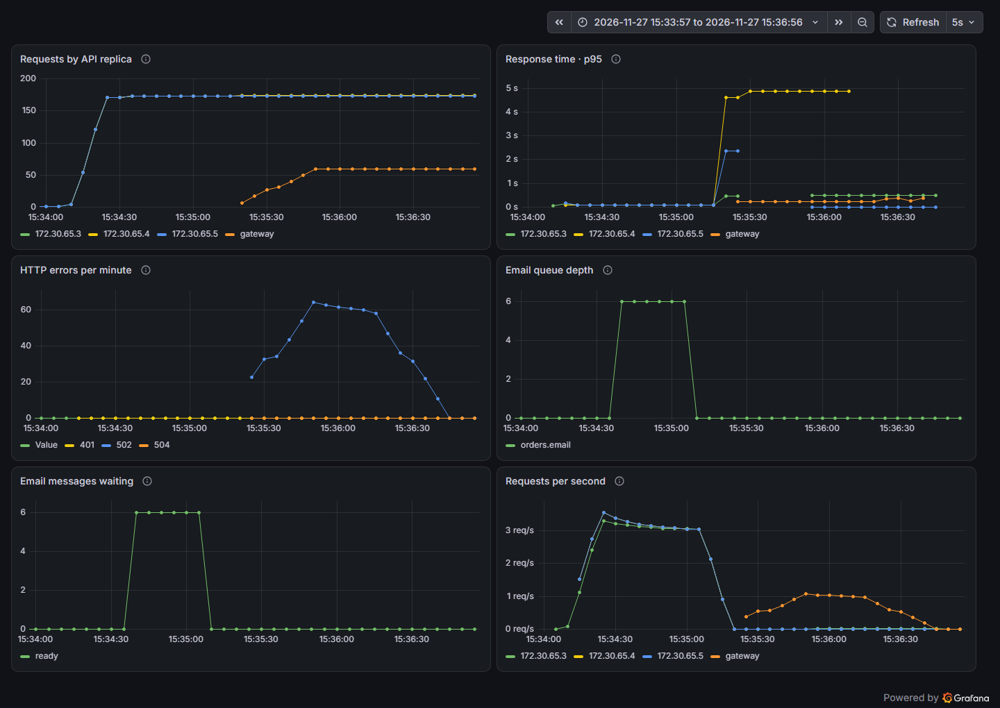

كيف أعرض إثباتات المتطلب السادس أمام الأستاذ؟
سيناريو عرض واحد بالأوامر، والكود الذي يقيس تحقق المقاييس والتنبيهات ورحلة طلب فعلية.
١. شو تجهّز قبل المقابلة؟
حضّر نافذة Ubuntu لتشغيل الاختبار، ونافذة متابعة السجل، وتبويب Grafana. اختبار واحد ينفّذ ضغطاً على النظام، ويحدث عطلاً مقصوداً في معمل ecommerce-req6، ويسجّل رحلة طلب إلى Mailpit. كل مرحلة لها شيء واضح تشير إليه أمام الأستاذ.
من PowerShell نفّذ wsl -d Ubuntu واترك نافذة Ubuntu مفتوحة طوال العرض. في Ubuntu على جهاز ملاد المجهّز:
cd /mnt/e/Projects/internet-applications
bash ops/req6/compose.sh --local-sources up -d --no-build --pull never --wait
python3 ops/req6/verify.py --monitoring-onlycdينتقل إلى جذر المشروع على قرص E.- يجمع
compose.shملفات البنية وإعداد المقابلة والمراقبة ضمن مشروعecommerce-req6. يفعّل--local-sourcesربط الكود الحالي على صور العرض الجاهزة. يشغّلup -dالخدمات في الخلفية، ويطلب--no-build --pull neverاستخدام الصور المحلية، وينتظر--waitجاهزية الحاويات. - يتأكد
--monitoring-onlyمن ظهور لوحة Grafana ذات الرسوم الستة، ووصول Prometheus إلى مصدرَي HTTP وRabbitMQ، ووجود قاعدتي التنبيه. بعدها تستطيع بدء الاختبار الفعلي.
لجهاز زميل يبدأ من نسخة جديدة، اتبع أوامر البناء وملفات البيئة في دليل التشغيل. التجهيز على جهاز آخر
bash ops/req6/compose.sh --local-sources ps api gateway inventory-service rabbitmq email-worker http-metrics prometheus grafana
curl --noproxy 127.0.0.1 -fsSi http://127.0.0.1:8016/upps يعرض الحاويات التي سيستعملها السكربت، ومنها ثلاث نسخ API وثلاثة عمّال. يختبر curl الطريق الفعلي عبر Nginx ويعرض ترويسة X-Req5-Upstream مع 200. افتح الروابط قبل تشغيل الضغط.
- اضبط مجال Grafana على Last 15 minutes والتحديث على 5s. لوحة Orders
- افتح تبويب قواعد التنبيه وأظهر الاسمين
OrderEmailQueueHighوHttpErrorsHigh. Grafana Alert Rules - اعرض أن هدفَي الجمع يعيدان UP. Prometheus Targets
تابع سجل الإشعارات في نافذة Ubuntu ثانية
cd /mnt/e/Projects/internet-applications
bash ops/req6/compose.sh logs --no-color -f --tail=0 http-metricsاترك الأمر شغالاً ليرى الأستاذ الإشعار عند وصوله. -f متابعة مباشرة و--tail=0 يبدأ مع الرسائل الجديدة فقط.
ابدأ الجولة في النافذة الأولى
python3 -u ops/req6/verify.py-u يطبع تقدم التجربة فوراً. يستخدم التشغيل عنوان المعمل على 8016، ويضيف بيانات تجريبية لست مشتريات. السكربت يدير الإيقافات وإعادة التشغيل، فشغّله مرة واحدة واتركه إلى PASS.
٢. الملفات والكود الذي يجعل الإثبات قابلاً للإعادة
| الملف | الدور |
|---|---|
| ops/req6/verify.py | سكربت إثبات جديد. يتواصل مع البوابة وGrafana وPrometheus وDocker وMailpit لقياس ما رآه المستخدم وما وصل فعلاً. |
| compose.sh · docker-compose.req6.yml | تشغيل المعمل وأوضاعه. يثبّتان عنوان الخدمات ومنافذ واجهات العرض ويستعملان اسم مشروع موحداً. |
| interview-fixture.php · interview.py | أعاد الاختبار استخدام تجهيز المقابلة السابق لإنشاء الزبون والمنتج وتزويد المخزون. عملية الشراء تجري عبر POST /api/orders. |
| req6-evidence.json · req6-dashboard.png | تقرير الجولة ولقطة Grafana في فترتها. يكتب السكربت التقرير بعد نجاح الفحوص، والتُقطت صورة Grafana من نافذة التقرير الزمنية. |

التأكد من أننا نجرب على البيئة الصحيحة
افتح ops/req6/verify.py · الأسطر 26–38
def docker(*args, data=None):
result = subprocess.run(['docker', *args], input=data, capture_output=True, text=True, timeout=100)
if result.returncode:
raise RuntimeError('Docker command failed: ' + args[0])
return result.stdout
def containers(service, count):
ids = docker('ps', '-q', '--filter', 'label=com.docker.compose.project='+PROJECT,
'--filter', 'label=com.docker.compose.service='+service).splitlines()
if len(ids) != count:
raise RuntimeError(f'Expected {count} running {PROJECT}/{service} containers, found {len(ids)}')
return idsافتح ops/req6/verify.py · الأسطر 84–128
def monitoring():
until(lambda:http(GRAFANA+'/api/health')[0]==200,'Grafana startup')
until(lambda:http(PROM+'/-/ready')[0]==200,'Prometheus startup')
dashboard = get_json(GRAFANA+'/api/dashboards/uid/req6-orders')['dashboard']
targets = until(lambda: (points if len(points := query('up{job=~"gateway|rabbitmq"} == 1')) == 2 else None),
'both Prometheus targets')
rules = get_json(GRAFANA+'/api/prometheus/grafana/api/v1/rules')['data']['groups']
names = {r['name'] for group in rules for r in group['rules']}
if not {'OrderEmailQueueHigh', 'HttpErrorsHigh'} <= names:
raise RuntimeError('Expected both provisioned rules')
return {'dashboard':dashboard['title'],'panels':len(dashboard['panels']),
'targets':[p['metric']['job'] for p in targets],'rules':sorted(names)}
def run():
monitored = monitoring()
until(lambda:http(BASE+'/up')[0]==200,'gateway and Laravel startup')
apis, workers = containers('api', 3), containers('email-worker', 3)
inv, = containers('inventory-service', 1)
publisher, = containers('outbox-publisher', 1)
gateway, = containers('gateway', 1)
containers('grafana', 1)
containers('mailpit', 1)
if docker('port',gateway,'80/tcp').strip() != '127.0.0.1:8016':
raise RuntimeError('Unexpected gateway port')
started = datetime.now(timezone.utc).isoformat(timespec='seconds')
started_ms = int(time.time()*1000)
tag = str(uuid4())
def fixture(cid, action):
return json.loads(docker('exec','-i','-e','REQ5_INTERVIEW_RUN='+tag,'-e',
'REQ5_INTERVIEW_ACTION='+action,cid,'php',data=FIXTURE))
if not all(fixture(cid, 'mailer') is True for cid in workers):
raise RuntimeError('This demonstration requires local Mailpit delivery')
user = fixture(apis[0], 'setup')
prepare_inventory(inv, user['product'])
marker = 'req6-test-'+tag
trace = str(uuid4())
def checkout(correlation):
status, headers, body = http(BASE+'/api/orders',
{'items':[{'product_id':user['product'], 'quantity':1}]},
{'Authorization':'Bearer '+user['token'], 'Content-Type':'application/json', 'Accept':'application/json',
'Idempotency-Key':str(uuid4()), 'X-Correlation-ID':correlation})
if status != 201 or headers.get('X-Correlation-ID') != correlation:
raise RuntimeError(f'Checkout or correlation header failed (HTTP {status})')
return json.loads(body)['data']['id']containers يستعمل تسميات Compose ليختار المشروع والخدمة. وجود أعداد الحاويات المتوقعة وربط البوابة على 8016 شرط قبل اختبار الانقطاع. يؤكّد الفحص الأول جاهزية Grafana وPrometheus والقاعدة واللوحة، ثم يستخدم السكربت fixture لتجهيز بيانات بيع حقيقية داخل المعمل، ويتحقق من أن البريد يتجه إلى Mailpit. يرسل checkout UUID في الترويسة ويشترط رجوعه مع 201 كي يبدأ الإثبات من رد العميل نفسه.
كيف يثبت الضغط والعدّ على الجهتين؟
افتح ops/req6/verify.py · الأسطر 134–183
def totals():
return {p['metric']['replica']:int(float(p['value'][1]))
for p in query('sum by(replica) (order_http_requests_total{status="200",replica!="gateway"})')}
# Seed a baseline for each series before applying load, including on a fresh stack.
def read_replica():
status, headers, _ = http(BASE+'/up')
if status != 200:
raise RuntimeError(f'Load request returned HTTP {status}')
address = headers.get('X-Req5-Upstream', '').split(',')[-1].strip()
if not address.endswith(':8000'):
raise RuntimeError('Missing API address on a successful response')
return address[:-5]
initial = totals()
warmup = Counter(read_replica() for _ in range(9))
if len(warmup) != 3:
raise RuntimeError('Warmup did not reach three API replicas')
def baseline():
current = totals()
return current if all(current.get(ip,0) >= initial.get(ip,0)+n for ip,n in warmup.items()) else None
before = until(baseline, 'replica counters after warmup')
remaining = 500
client_counts = Counter()
dashboard_query = 'sum by (replica) (order_http_requests_total)'
with ThreadPoolExecutor(max_workers=10) as pool:
while remaining:
batch = min(25, remaining)
client_counts.update(pool.map(lambda _: read_replica(), range(batch)))
remaining -= batch
if remaining == 250:
proxy = GRAFANA+'/api/datasources/proxy/uid/req6-prom/api/v1/query?'
sample = get_json(proxy+urlencode({'query':dashboard_query}))['data']['result']
report['grafana_during_load'] = {p['metric']['replica']:float(p['value'][1]) for p in sample}
if len(report['grafana_during_load']) < 3:
raise RuntimeError('Grafana did not return all three replica series during load')
time.sleep(.45)
if sum(client_counts.values()) != 500 or set(client_counts) != set(warmup):
raise RuntimeError('Expected 500 successful load requests')
report['client_http_200'] = dict(client_counts)
def load_seen():
current = totals()
delta = {ip:current.get(ip,0)-before[ip] for ip in client_counts}
return delta if all(delta[ip] >= n for ip,n in client_counts.items()) else None
report['load_200_by_replica'] = until(load_seen,'Prometheus load per replica')
points = until(lambda:query('histogram_quantile(0.95,sum by(le)(rate(order_http_duration_seconds_bucket[1m])))'),
'response-time histogram')
report['p95_seconds'] = float(points[0]['value'][1])
if not (0 <= report['p95_seconds'] < float('inf')):
raise RuntimeError('No finite latency sample')
print('Load shown on Grafana:', report['load_200_by_replica'], flush=True)يجهّز العميل عدّادات الأساس بتسعة طلبات على النسخ الثلاث. يستعمل عشرة خيوط عبر ThreadPoolExecutor ويرسل مجموع ٥٠٠ طلب على دفعات ٢٥. بعد ٢٥٠ طلباً يطلب نفس استعلام العدّ من مصدر Grafana، ويطلب وجود بيانات ثلاث نسخ. يتحقق بعد انتهاء الدفعة أن كل رد ناجح وأن Prometheus رصد لكل نسخة على الأقل عدد ردودها المقاسة من العميل. ثم يحسب p95 من Histogram ويتحقق من أن الناتج عددي محدود.
كيف يرفع قيمتين ويبرهن وصول إشعارين؟
افتح ops/req6/verify.py · الأسطر 184–197
queue_alert, error_alert = 'OrderEmailQueueHigh', 'HttpErrorsHigh'
q0, e0 = notified(queue_alert,'firing'), notified(error_alert,'firing')
qr0, er0 = notified(queue_alert,'resolved'), notified(error_alert,'resolved')
try:
docker('stop', '-t', '4', *workers)
report['order_id'] = checkout(trace)
for _ in range(5):
checkout(str(uuid4()))
ready = until(lambda:query('rabbitmq_queue_messages_ready{queue="orders.email"} >= 6'), 'six waiting emails')
report['queue_ready'] = int(float(ready[0]['value'][1]))
until(lambda:notified(queue_alert,'firing') > q0, 'queue alert delivered')
print('Queue alert delivered; ready messages:', report['queue_ready'], flush=True)
finally:
docker('start', *workers)افتح ops/req6/verify.py · الأسطر 229–246
try:
docker('stop','-t','2',*apis)
errors = 0
deadline = time.monotonic()+100
while notified(error_alert,'firing') <= e0 and time.monotonic() < deadline:
errors += http(BASE+'/up')[0] >= 500
time.sleep(.4)
if errors < 3 or notified(error_alert,'firing') <= e0:
raise RuntimeError('HTTP error alert did not reach its receiver')
report['observed_http_5xx'] = errors
print('HTTP error alert delivered; observed 5xx:',errors,flush=True)
finally:
docker('start', *apis)
until(lambda:http(BASE+'/up')[0]==200,'API recovery')
until(lambda:notified(queue_alert,'resolved') > qr0 and notified(error_alert,'resolved') > er0,
'both recovery notifications',150)
report['delivered_alerts']=[queue_alert,error_alert]
report['recovered_alerts']=[queue_alert,error_alert]يقرأ عدادات الإشعار القديمة قبل التوقف. يوقف العمال ويُنشئ ستة طلبات، فيرى Prometheus ست رسائل منتظرة في الوسيط. ينتظر وصول إشعار القاعدة إلى المستقبل حتى يزيد عدّاده. ثم يختبر توقف API بينما تقيس البوابة الردود 5xx وتبقى Grafana متاحة. تعيد كتل finally تشغيل خدمات الاختبار. وشرط التعافي النهائي ينتظر HTTP 200 وزيادة عدّادَي resolved ليبرهن دورة كاملة.
كيف يتحقق من مسار الطلب ويحفظ الدليل؟
افتح ops/req6/verify.py · الأسطر 198–228
def traced():
matches = []
for service, ids in [('api',apis),('inventory-service',[inv]),('outbox-publisher',[publisher]),('email-worker',workers)]:
for cid in ids:
logs = subprocess.run(['docker','logs','--since',started,cid],capture_output=True,text=True,check=True)
raw = logs.stdout + logs.stderr
if marker in raw or user['token'] in raw:
raise RuntimeError('Sensitive value found in '+service+' logs')
for line in raw.splitlines():
if trace not in line: continue
row = json.loads(line)
if row.get('correlation_id')==trace:
matches.append({'service':service, **row})
messages={r['message'] for r in matches}
needed={'HTTP request started','Inventory RPC finished','HTTP request finished','Outbox publication confirmed',
'Order confirmation accepted by delivery transport','Order email processed'}
if not needed <= messages:
return None
events = [r for r in matches if r['message'] in {'Outbox publication confirmed','Order email processed'}]
if len({r['event_id'] for r in events}) != 1 or any(r['order_id'] != report['order_id'] for r in events):
raise RuntimeError('Trace reached a different order or event')
return sorted(matches,key=lambda r:datetime.fromisoformat(r['time'].replace('Z','+00:00')))
report['trace'] = until(traced,'complete correlation across services')
gateway_logs = subprocess.run(['docker','logs','--since',started,gateway],capture_output=True,text=True,check=True)
if any(value in gateway_logs.stdout + gateway_logs.stderr for value in (marker, user['token'])):
raise RuntimeError('Sensitive value found in gateway log')
inbox = get_json('http://127.0.0.1:8026/api/v1/search?'+urlencode({'query':'to:'+tag+'@example.invalid'}))
if sum(m['Subject']==f"Order #{report['order_id']} confirmation" for m in inbox['messages']) != 1:
raise RuntimeError('Expected exactly one confirmation for the traced order')
report['smtp_copies_for_order'] = 1
print('Traced order',report['order_id'],'from HTTP through inventory and SMTP:',trace,flush=True)افتح ops/req6/verify.py · الأسطر 247–260
report['secret_probe']='absent from checked logs'
ended_ms = int(time.time()*1000)
report['dashboard_url'] = f'{GRAFANA}/d/req6-orders/orders?from={started_ms}&to={ended_ms}'
path = ROOT/'docs'/'req6-evidence.json'
path.write_text(json.dumps(report,ensure_ascii=False,indent=2)+'\n',encoding='utf-8')
print('PASS',path,'correlation_id',trace,flush=True)
if __name__=='__main__':
try:
if sys.argv[1:] == ['--monitoring-only']: print(json.dumps(monitoring(),indent=2))
elif not sys.argv[1:]: run()
else: sys.exit('Usage: verify.py [--monitoring-only]')
except (RuntimeError,URLError,OSError,ValueError,subprocess.SubprocessError) as exc:
sys.exit('FAIL: '+str(exc))يقرأ السكربت السجل منذ بدء الجولة ويطابق نفس UUID في السطور المنسقة، ويطلب أحداث البداية والمستودع والرد ونشر Outbox وقبول ناقل البريد والإنهاء. يطابق أيضاً الحدث والطلب لدى الناشر والعامل، ثم يعدّ رسائل Mailpit المطابقة للموضوع. يكتب dashboard_url بنطاق زمني بالميلي ثانية، ويحفظ الملف قبل طباعة PASS. إذا ظهرت FAIL فتاريخ التقرير السابق يبقى مرجع جولة مختلفة.
٣. ماذا تُظهر في كل لحظة؟
| لحظة العرض | أين تشير؟ | شو تقول؟ |
|---|---|---|
| مع بداية الحمل | Requests by API replica وResponse time · p95. | كل لون يمثّل عنوان نسخة، ونقيس زمن الرد عند البوابة. في الجولة المحفوظة عادت ٥٠٠ استجابة 200 موزعة ١٦٦ و١٦٧ و١٦٧، وp95 نحو ٩٧ ميلي ثانية في مرحلة الحمل. |
| عند إيقاف العامل | منحنى Email messages waiting وطرفية webhook. | وصلت ست رسائل إلى الطابور من مشتريات فعلية، فأُطلقت قاعدة OrderEmailQueueHigh ووصل سطر firing. بعد رجوع العمال هبط الرسم ووصل resolved. |
| عند إيقاف API | HTTP errors per minute ثم سطر HttpErrorsHigh. | ظل Nginx يرد وسجّل العميل ٦١ رد 5xx في الجولة المحفوظة. أعاد السكربت النسخ وانتظر التعافي. رسم الأخطاء يعرض نافذة متحركة فيمكن أن يبقى مرتفعاً قليلاً بعد رجوع الخدمة. |
| عند اكتمال الاختبار | PASS، ثم سطور الطلب وMailpit. | أطابق UUID نفسه عبر التطبيق والمستودع والناشر والعامل، وأفتح تأكيد البريد بنفس رقم الطلب. |

أوامر بعد PASS
python3 -c 'import json; d=json.load(open("docs/req6-evidence.json")); print("HTTP 200:",d["client_http_200"]); print("p95 ms:",round(d["p95_seconds"]*1000,1)); print("Ready:",d["queue_ready"]); print("Firing:",d["delivered_alerts"]); print("Resolved:",d["recovered_alerts"]); print("Order:",d["order_id"]); print("Grafana:",d["dashboard_url"])'
TRACE=$(python3 -c 'import json; print(json.load(open("docs/req6-evidence.json"))["correlation_id"])')
bash ops/req6/compose.sh logs --no-color api inventory-service outbox-publisher email-worker \
| grep -F "$TRACE"الأول يخرج أرقام الجولة ورابط Grafana لفترتها. الأمران التاليان يضعان UUID في TRACE ويستخرجان السطور التي تحمل نفس القيمة. استخدم حقل time في سطور JSON لإظهار ترتيب الأحداث. افتح موضوع Order #رقم الطلب confirmation لعرض أن الرحلة وصلت فعلاً إلى صندوق البريد. صندوق Mailpit
«عندي ثلاث مشاهد من تجربة واحدة. هون Grafana لقطت الحمل على النسخ الثلاث. هون أوقفت خدمة ضمن المعمل، وبشوف إشعار العطل وإشعار التعافي. وهون بطلع معرّف من طلب حقيقي وبطابقه بالسجل عند التطبيق والمستودع والعامل، وبطابق رقم الطلب مع الرسالة.»